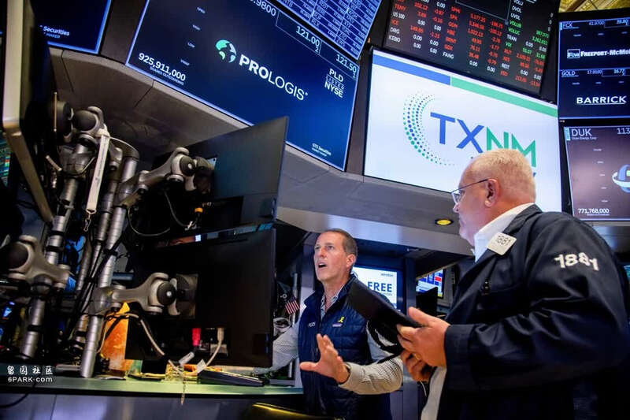
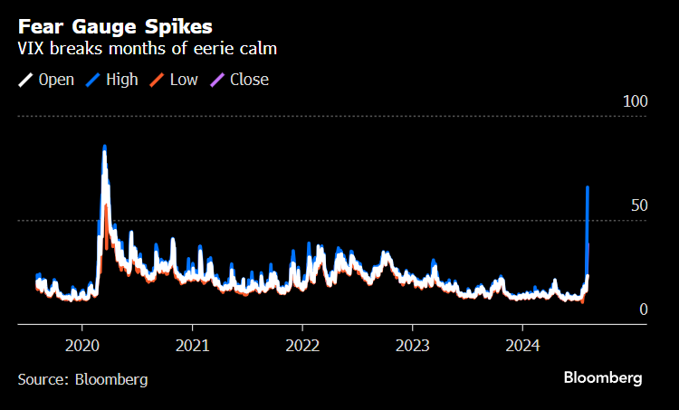

周一交易屏幕上闪现的数字，即使是市场老手也感到震惊。
在东京，日经指数下跌12%；在首尔，Kospi指数下跌9%；当纽约的开盘钟声响起时，纳斯达克指数在几秒钟内暴跌6%。加密货币暴跌；衡量股市波动性的VIX指数飙升；投资者纷纷涌入国债这一最安全的资产。

纽约证券交易所的交易大厅内交易员云集。
周一的剧烈波动是标志着上周开始的全球抛售潮的最终崩溃，还是预示着长期低迷的开始，目前还不得而知。但有一点是明确的：多年来支撑金融市场收益的支柱——全球投资者所依赖的一系列关键假设，已经被动摇。回想起来，这些假设显得有些天真：美国经济势不可挡；人工智能将迅速推动各地商业革命；日本永远不会加息——或者加息幅度不足以真正产生影响。
过去几周，快速涌现的证据逐一推翻了这些假设。美国7月份的就业报告疲软无力，大型科技公司的AI驱动季度收益也是如此，日本央行今年第二次加息。
全球股市已经蒸发6.4万亿美元
一连串的重击让投资者突然意识到，在不到两年的时间里将英伟达公司的股价推高1100%，或大量买入垃圾债券，或在日本借钱，然后投入墨西哥获得11%回报的资产……这些做法本身就存在巨大风险。三周内，全球股市已经蒸发了约6.4万亿美元。
新加坡瑞穗银行首席经济学家兼策略师维什努·瓦拉坦认为，“这是一场大清算”。用交易员的行话来说，试图选择正确时机买入正在下跌的资产，就像试图接住一把落下的刀一样。
瓦拉坦表示：“如今到处都是落刀”。
市场的恐慌会带来大大小小的风险。如果抛售得不到及时遏制，可能会破坏金融系统的正常运转，贷款减缓发放，将成为压垮全球经济的最后一根稻草，进而导致经济衰退。
人们呼吁美联储开始降息，些人甚至主张在9月的下一次政策会议之前就开始降息。在债券市场，投资者纷纷涌入短期国债，导致两年期国债收益率一度低于10年期国债收益率，收益率曲线倒挂为两年来首次。随后，收益率曲线又恢复到正常形态，这通常被视为经济衰退即将来临的信号。
对于密切关注市场长达半个世纪的经济学家埃德·亚德尼来说，市场的突然崩溃让他想起了1987年的黑色星期一，当时道指一天内暴跌了23%。亚德尼指出，那确实令人恐惧，但最终并未成为经济崩溃的预兆。
“当时人们认为我们正处于或即将陷入衰退，但实际上根本没有发生”，亚德尼认为这更多与市场内部因素有关，现在也是同样的情况。
在当前的牛市期间，市场也曾因过早的衰退担忧而动荡不安。去年年初，一场短暂的银行恐慌曾让担忧加剧，但随后美国经济的强劲表现又迅速平息市场的情绪。股市也从2022年的重挫中强劲反弹，今年一直徘徊在历史新高附近。
但近几天来，全球市场情绪的转变却异常明显，打破了夏末的宁静。米勒塔巴克公司首席市场策略师马特·马利也记得1987年的崩盘以及那次崩盘来的冲击，并表示周一早上他感到有点似曾相识。
动荡已酝酿数周
周一市场动荡的根源已经酝酿数周之久。
7月初，就在科技股达到顶峰之际，投资者预计日本央行将效仿其他央行撤回货币刺激措施，日元开始急剧升值。这促使交易员解除利差交易——即在日本以相对较低的成本借款并在其他地方投资，以保住已获得的利润。借来的资金被归还，反过来又给全球市场带来了抛售压力。
一系列接踵而至的盈利报告，加剧了人们对大型科技股的担忧。科技股一直是近期市场上涨的主要驱动力，但股价已经涨得过高，而公司尚未从人工智能领域的巨额投资中获得任何利润丰收，亚马逊公司和英特尔公司都因业绩不佳而暴跌。
与此同时，债券市场不断发出日益加剧的担忧信号，数据也表明经济的一些领域开始降温。上周三，美联储将利率维持在20多年来的高位，日本央行也收紧了政策，债券已经反弹。随后，在失业率上升和就业增长远低于预测之后，债券在周五进一步上涨。
华尔街的经济学家们开始预测，美联储将需要采取半个百分点的降息措施或在会议间隙采取行动。
周一早盘，由于日本央行加息，日元飙升3%，日经指数全天暴跌。收盘时，日经指数创下自1987年以来的最大跌幅。
“这超出了我所有的预期”东京的首席交易台策略师奥守正己表示，“我们正步入难以想象的交易领域。做好更多波动的准备吧。”

亚洲其他股市和欧洲股市也相继遭受冲击，欧洲主要股指暴跌，随后美洲股市也未能幸免。信贷市场也受到影响，至少有两家公司——无线基础设施提供商SBA Communications和主题公园运营商SeaWorld Parks & Entertainment——推迟了总额为38亿美元的贷款交易。
美国股市在午后从低点反弹，纳斯达克综合指数下跌3.4%，债市也趋于稳定。但这并没有让紧张的交易员们平静下来，他们不愿将此视为又一次虚惊一场。
Miller Tabak的策略师马利仍然担忧，“我们担心收益和经济状况”。